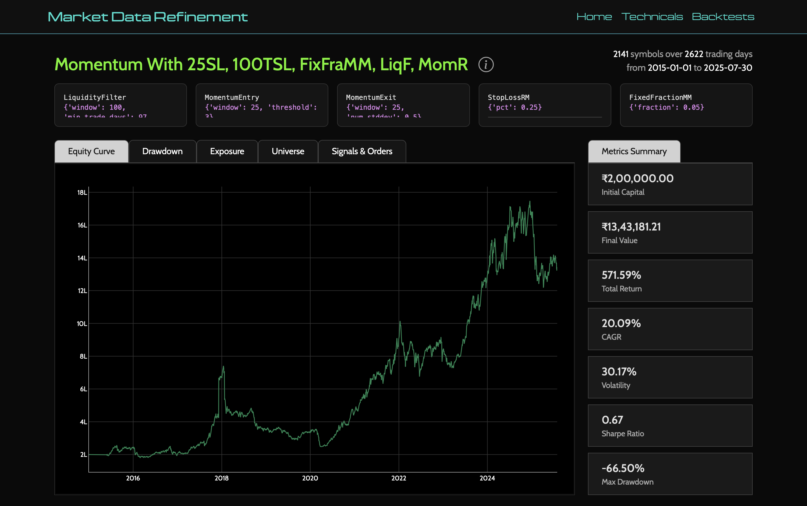
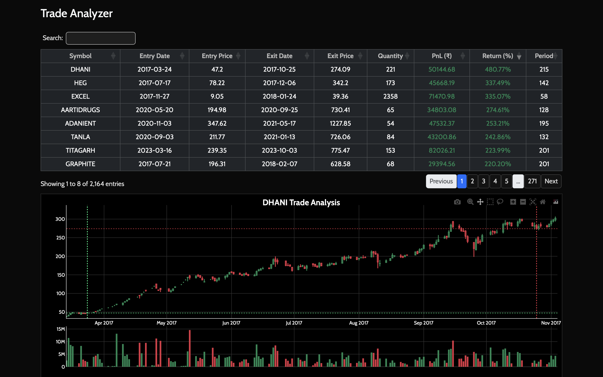

If you’ve ever backtested a strategy on “historical data” and treated the result as truth, this project is my attempt to gently ruin that confidence.
I built market-data-refinement because I wanted to do two things properly:
- trust my market data, and
- trust the experiment loop built on top of it.
This became a full pipeline: ingestion, validation, correction, simulation, and analysis, all wired into a small web app so I can inspect every run like a lab notebook.
Most trading projects start with strategy ideas. This one starts with a less glamorous question: is my data even right?
The Problem I Wanted to Solve
Real-world market data is messy. Symbols get delisted or change, companies merge and demerge, APIs occasionally disagree with your stored candles, and “incremental updates” can quietly drift over time. A backtest built on that kind of drift is just a very fast departure from reality.
So I split the system into following parts:
- DEX (data exchange/refinement layer): continuously tracks tradable NSE securities and daily OHLCV.
- BATE (backtesting layer): runs configurable strategy simulations on refined data and stores reproducible run artifacts.
- Frontend: the website makes results explorable, from high-level metrics down to single-trade candlestick drill-downs.
The daily orchestration is very simple: track tradables first, then update instruments and OHLCV.
What “Refinement” Means in Practice
The interesting part of this project is not fetching data. It’s verifying and healing it. For each symbol, the updater does something I really like architecturally: it compares recent DB candles against fresh API candles before deciding how aggressive to be.
- If no history exists, it bootstraps full history (from 2000 onward). This is very rare.
- If recent history matches, it only inserts missing days. This is the most frequent scenario.
- If there’s a mismatch on the latest day and only a small discrepancy, it patches just that day. This happens from time to time due to the quirks associted with the market data API.
- If mismatches look broader, it drops and refetches the symbol’s full history. This occurs everytime a stock is split or a dividend is issued. The market data API adjusts all of the history based on the corporate action and hence, we need a full update.
That gives me a hybrid of incremental efficiency and full-refresh safety. It’s not perfect, but it’s explicit, inspectable, and way more robust than “append and pray.”
I applied the same philosophy to securities master data. The NSE sync doesn’t just overwrite rows — it logs field-level changes, versions daily snapshots, and marks delistings when symbols disappear from current feeds. That gives me a crude but useful “source-of-truth timeline” for instruments.
Backtesting Engine

Once data is reliable enough, I wanted strategy experimentation to be composable. The backtester is built around a Strategy object that dynamically loads components from config:
- universe selection
- entry logic
- exit logic
- risk management
- money management
- ranking
Each bucket can combine multiple sub-strategies with union/intersection, which makes it easy to test ideas like:
- strict intersection for high-conviction entries
- union for broader opportunity sets
- dedicated rankers when too many orders compete for limited capital
On execution, the simulator runs day-by-day and processes pending orders from the previous day first. Fill price is sampled between day low/high (to avoid magical close-price fills), and brokerage charges are explicitly modeled for both buy and sell paths.
Could this be more realistic with microstructure assumptions? Absolutely. But I’d rather start with a transparent approximation I can reason about than a “realistic” black box.
Observability
I didn’t want a system that only tells me CAGR and Sharpe at the end.
Every run writes a full artifact directory with config, metrics, portfolio history, trade logs, failed orders, and closed trades. This becomes a portable experiment snapshot. If a run looks suspicious, I can inspect exactly what happened without rerunning anything.
The Flask UI then turns these artifacts into something explorable:
- list and compare runs
- view backtest metrics and distributions
- inspect best/worst trades
- click into a trade and fetch surrounding OHLCV from Postgres to visualize entry/exit context

That last part is deceptively useful. It’s one thing to see a profitable trade in a CSV; it’s another to see where it sat inside actual price action.
Why I Built It This Way
I like systems that are boring in operation but rich in introspection. This project has a few explicit trade-offs:
- Prefect for orchestration: extra complexity, but better retries and flow visibility
- Postgres + filesystem split: DB holds refined market truth, filesystem holds run artifacts
- Dynamic strategy loading: faster experimentation, but configuration discipline matters
- Randomized intraday fill approximation: more honest than naive fills, less deterministic than pure close-to-close simulations
In short: I optimized for iterating on ideas without lying to myself too much.
What I Learned
Building this changed how I think about quant tooling. The most important code wasn’t in indicators or models — it was in data quality checks, mismatch handling, version logs, and run traceability. That’s where confidence comes from.
Despite my best efforts, I could not solve for a few issues. The most important issue that the stocks that got delisted before I started my data pulls have no representation in my data. My existing market data API (from Zerodha) does not provide data on delisted companies as the moment. This means there will be a survivorship bias in the results. We could account for this to some degree by selecting the universe more carefully but that isn't ideal. Hopefully, such data is not behind a paywall and more easily available in the future.
If I had to summarize the project in one line:
It’s a personal attempt to make backtesting feel less like storytelling and more like engineering.
All in all, a fun project where I had to deal with data issues more than anything else. Hopefully, I can put this to use to make some money. But that is for another post.
The code for the project can be found here.